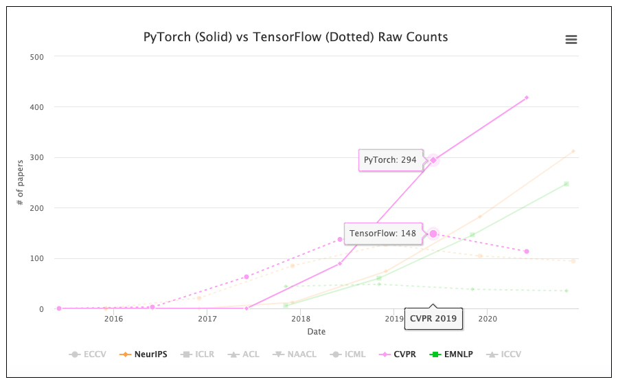
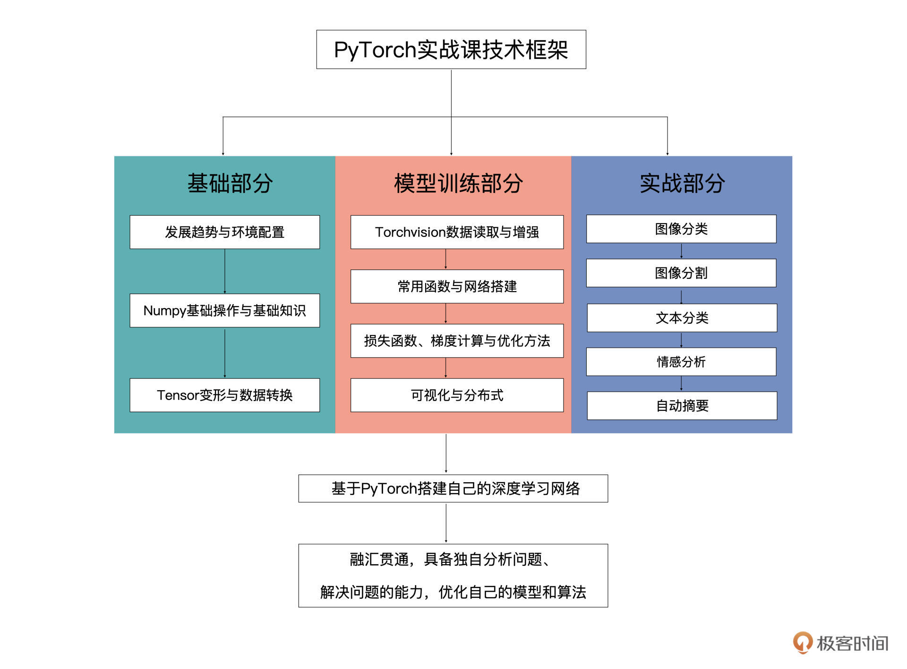

- 00 开篇词 如何高效入门PyTorch？.md.html
- 01 PyTorch：网红中的顶流明星.md.html
- 02 NumPy（上）：核心数据结构详解.md.html
- 03 NumPy（下）：深度学习中的常用操作.md.html
- 04 Tensor：PyTorch中最基础的计算单元.md.html
- 05 Tensor变形记：快速掌握Tensor切分、变形等方法.md.html
- 06 Torchvision（上）：数据读取，训练开始的第一步.md.html
- 07 Torchvision（中）：数据增强，让数据更加多样性.md.html
- 08 Torchvision（下）：其他有趣的功能.md.html
- 09 卷积（上）：如何用卷积为计算机“开天眼”？.md.html
- 10 卷积（下）：如何用卷积为计算机“开天眼”？.md.html
- 11 损失函数：如何帮助模型学会“自省”？.md.html
- 12 计算梯度：网络的前向与反向传播.md.html
- 13 优化方法：更新模型参数的方法.md.html
- 14 构建网络：一站式实现模型搭建与训练.md.html
- 15 可视化工具：如何实现训练的可视化监控？.md.html
- 16 分布式训练：如何加速你的模型训练？.md.html
- 17 图像分类（上）：图像分类原理与图像分类模型.md.html
- 18 图像分类（下）：如何构建一个图像分类模型_.md.html
- 19 图像分割（上）：详解图像分割原理与图像分割模型.md.html
- 20 图像分割（下）：如何构建一个图像分割模型？.md.html
- 21 NLP基础（上）：详解自然语言处理原理与常用算法.md.html
- 22 NLP基础（下）：详解语言模型与注意力机制.md.html
- 23 情感分析：如何使用LSTM进行情感分析？.md.html
- 24 文本分类：如何使用BERT构建文本分类模型？.md.html
- 25 摘要：如何快速实现自动文摘生成？.md.html
- 加餐 机器学习其实就那么几件事.md.html
- 用户故事 Tango：师傅领进门，修行在个人.md.html
- 答疑篇 思考题答案集锦.md.html
- 结束语 人生充满选择，选择与努力同样重要.md.html
- 捐赠
00 开篇词 如何高效入门PyTorch？
你好，我是方远，欢迎你跟我一起学习PyTorch。
先做个自我介绍吧！我曾先后供职于百度和腾讯两家公司，任职高级算法研究员，目前在一家国际知名互联网公司Line China担任数据科学家，从事计算机视觉与自然语言处理相关的研发工作，每天为千万级别的流量提供深度学习服务。
想一想，我进入机器学习与深度学习的研究和应用领域已经有10年的时间了，这是个很有意思的过程。在人工智能快速发展的背景下，各种各样的深度学习框架层出不穷，有当下的主流，也有如今的新秀。
为什么我会这么说呢？这其实可以追溯到我的研究生时期。最早，我只是把PyTorch，打上了一个新秀的标签，记得那时候，深度学习的浪潮才刚刚兴起，传统的机器学习开始转到深度学习，但是我们能选的框架却十分有限。
当时在学术界流行的一个深度学习框架是Theano，可能有的同学都没有听说过它。这个框架就像是祖师爷般的存在，从2008年诞生之后的很长一段时间中，它都是深度学习开发和研究的行业标准。
为了复现论文中的算法，我开始学习Theano。接触之后，我发现它的声明式编程，无论是风格还是逻辑都十分奇特。而且那时候的学习资料很匮乏，只能啃官方的说明文档。如此一来，我觉得Theano十分晦涩难学，入门门槛非常高。
后来，我去到了互联网大厂的核心部门工作。那时学术界已经涌现出了很多深度学习方面的研究，而工业界才刚刚开始将深度学习技术落地。Google 的 TensorFlow 框架于2015年正式开源，而我们的团队也开始着手把深度学习技术应用于文本处理等方向。
2017年，Google发布了TensorFlow 1.0版本，到了2019年，又发布了2.0新版本。TensorFlow 1.x版本时期，TensorFlow框架拥有大量的用户。不过，问题也非常明显，主要的弊端就是框架环境配置不兼容，新老版本函数差异也很大，且编程困难。
但凡涉及版本更新，总会出现API变化，前后版本不兼容的问题。并且当我阅读别人代码的时候，TensorFlow 1.x的可读性也不是很高。这些问题都增加了我的学习成本。直到TensorFlow 2.x版本，TensorFlow逐渐借鉴了PyTorch的优点，进行了自我完善。
而与 TensorFlow 同一时期横空出世，也拥有众多用户的一个深度学习框架还有 Keras。Keras 的 API 对用户十分友好，使用起来很容易上手。如果有什么想法需要快速实验，看一看效果，那 Keras 绝对是不二的选择。
但是，高度模块化的封装也同样会带来弊端，看起来学习Keras似乎十分容易，但我很快就遇到了瓶颈。高度封装就意味着不够灵活，比如说如果需要修改一些网络底层的结构，Keras 所提供的接口就没有支持。在使用Keras的大多数时间里，我们主要都停留在调用接口这个阶段，很难真正学习到深度学习的内容。
直到 PyTorch 出现，随着使用它的人越来越多，其技术迭代速度跟生态发展速度都很迅猛。如果你在GitHub找到了一个PyTorch项目相关的开源代码，我们可以很容易移植到自己的项目中来，直接站在巨人的肩膀上看世界。
而且相比前面那些主流框架，PyTorch有着对用户友好的命令式编程风格。PyTorch设计得更科学，无需像TensorFlow那样，要在各种API之间切换，操作更加便捷。
PyTorch 的环境配置也很方便，各种开发版本都能向下兼容，不存在老版本的代码在新版本上无法使用的困扰，而且PyTorch跟NumPy的风格比较像，能轻易和Python生态集成起来，我们只需掌握NumPy和基本的深度学习概念即可上手，在网络搭建方面也是快捷又灵活。
另外，PyTorch 在debug代码的过程也十分方便，可以随时输出中间向量结果。用PyTorch就像在Python中使用print一样简单，只要把一个pdb断点扔进PyTorch模型里，直接就能用。
因为它的优雅灵活和高效可用，吸引了越来越多的人学习。如果还有人只把PyTorch当成一个新秀，觉得PyTroch不过是个“挑战者”，试图在TensorFlow主导的世界里划出一片自己的地盘。那么数据可以证明，这种想法已经时过境迁。事实上，PyTorch无论在学术界还是在工业界，都已经霸占了半壁江山。
从学术界来看，2019年之前，TensorFlow还是各大顶会论文选择的主流框架，而2019年之后，顶会几乎成了PyTorch的天下，此消彼长，PyTorch只用了一年的时间。

要知道，机器学习这个领域始终是依靠研究驱动的，工业界自然也不能忽视科学研究的成果。就拿我所在的团队来说，现在也已经逐步向PyTorch框架迁移，新开展的项目都会首选用PyTorch框架进行实现。
不得不说，PyTorch的应用范围已经逐渐扩大，同时也促进了其生态建设的发展。由于现在越来越多的开发者都在使用PyTroch，一旦我们的程序遇到了error或bug，很容易就可以在开发论坛上寻找到解决方案。
总之，一旦你掌握了PyTorch，就相当于走上了深度学习、机器学习的快车道。以后学习其他深度学习框架也可以快速入门，融会贯通。
如果你即将或者已经进入了深度学习和机器学习相关领域，PyTorch能够帮你快速实现模型与算法的验证，快速完成深度学习模型部署，提供高并发服务，还可以轻松实现图像生成、文本分析、情感分析等有趣的实验。另外有很多算法相关的岗位，也同样会要求你熟练使用PyTorch等工具。
可以探索的方向还有很多，这里就不一一列举了。那么问题来了，既然PyTorch有这么多优点，我们要怎样快速上手呢？
只看原理好比空中楼阁，而直接实战对初学者来说又相对困难。因此我推荐的方法是，先理一个整体框架，有了整体认知之后，再通过实战练习巩固认知。
具体来说，我们要先把框架的基本语法大致了解一下，然后尽快融入到一个实际项目当中，看一看在实际任务中，我们是怎么基于框架去解决一个问题的。这个专栏，也正是沿着这样一个思路设计的。我在专栏里给你提供了丰富的代码和实战案例，可以帮助你快速上手PyTorch。

通过这个专栏，你将会熟练使用 PyTorch 工具，解决自己的问题，这是这个专栏要实现的最基础的目标。
除了掌握工具用法之上，我希望交付的终点是让你获得分析问题的能力和解决问题的方法，让你懂得如何优化你自己的算法与模型。在学习经验方面，我希望这个专栏为你打开一扇窗，让你知道走深度学习这条路，需要有怎样的知识储备。
为了让你由入门到精通，我把专栏分成了三个递进的部分。
基础篇
简要介绍PyTorch的发展趋势与框架安装方法，以及 PyTorch的前菜——NumPy的常用操作。我们约定使用PyTorch 1.9.0 版本，以及默认你已经掌握了Python编程与简单的机器学习基础，不过你也不用太过担心，遇到新知识的我基本都会从0开始讲起的。
模型训练篇
想要快速掌握一个框架，就要从核心模块入手。在这个部分，会结合深度学习模型训练的一系列流程，为你详解自动求导机制、搭建网络、更新模型参数、保存与加载模型、训练过程可视化、分布式训练等等模块，带你具体看看PyTorch 能给我们提供怎样的帮助。通过这个部分的学习，你就能基于PyTorch搭建网络模型了。
实战篇
我们整个专栏都是围绕 PyTorch 框架在具体项目实践中的应用来讲的，所以最后我还会结合当下流行的图像与自然语言处理任务，串联前面两个模块的内容，为你深入讲解 PyTorch 如何解决实际问题。
总之，除了交付给你一个系统的PyTorch技术学习框架，我还希望给你传递我在深度学习这条路上的经验思考。
最后，给你一点建议，对于学习PyTorch来说，边学边查、边练边查是个很好的方法。因为在我们实际做项目的时候，肯定会遇到一些之前没有使用过的函数，自己去查的话可以很好地加强记忆。
当然，我也会尽心做好一个引路人，带你一步步实现课程目标，也期待你能以更加积极的状态投入到本次的学习之旅。现在就让我们一起探索PyTorch，打开深度学习的大门吧！
© 2019 - 2023 Liangliang Lee. Powered by gin and hexo-theme-book.